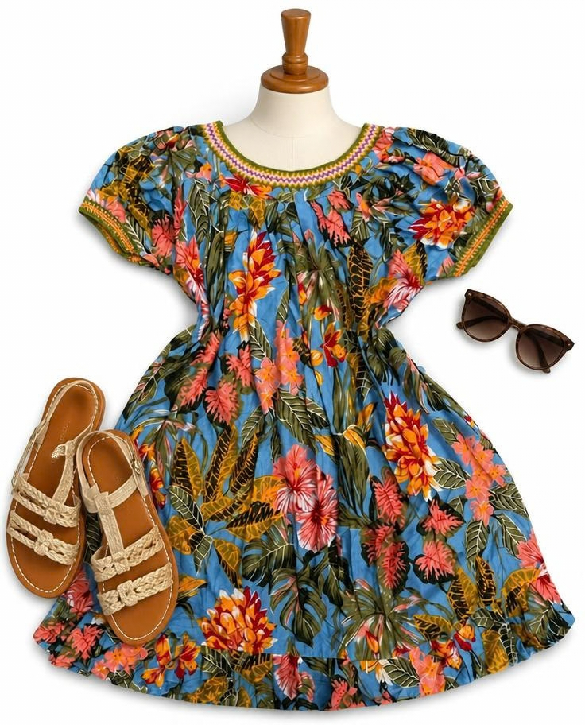
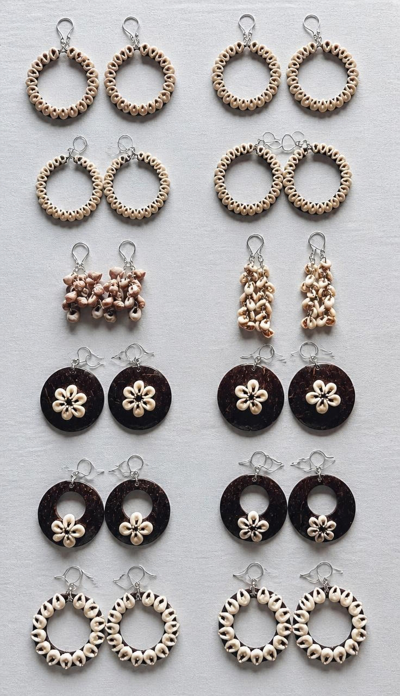

Our Purpose

Every meri blouse and piece of jewelry is carefully crafted to highlight PNG's rich heritage, bright patterns, and local artistry.
Authentic PNG Meri Blouses & Handcrafted Jewelry
At JeayR Boutique, we celebrate Papua New Guinean culture and style. We are a proud local SME specializing in vibrant, high-quality PNG meri blouses and handcrafted local jewelry designed for everyday elegance and cultural occasions.

Every meri blouse and piece of jewelry is carefully crafted to highlight PNG's rich heritage, bright patterns, and local artistry.

Whether you need a comfortable daily meri blouse or statement earrings made from local shells and seeds, JeayR Boutique brings you quality products at affordable prices.